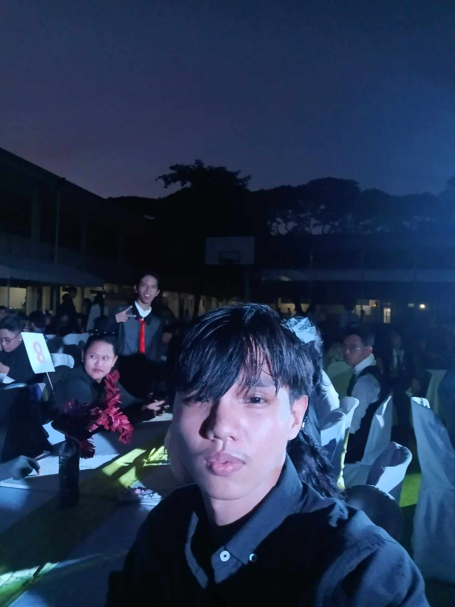

The Silliman University Celebrated its annual “Parada Sillimaniana” on August 26, 2024 at 2:30 p.m. – 3:00 p.m. on the streets of Dumaguete City. It was to celebrate the 123rd Silliman University Founders Day. In this event I was a spectator admiring the talented bandmembers of Silliman.
During this event I learned that it is the 123rd Founders Day of Silliman and it is amazing to think that the University that I am in right now has such a long history since it’s already in its decade and two centuries celebrating its founders day. I was already expecting to witness the talented and dynamic bandmembers of Silliman to showcase their talents as they roam in the streets. They did not disappoint since the bandmembers displayed a spectacular performance showing their passion and love for Silliman. The bandmembers made a strong impression by demonstrating their skills and I was in awe.
Witnessing how far Silliman has come it’s a nice feeling that I am now a part of the University and it made me more motivated to pass and make Silliman my alma mater. The celebration of the event through a parade is one of the ways to say to the world that Silliman is 123 years old it’s beneficial to us Sillimanian’s too since we are able to proudly announce how far our university has come.
Because of this activity, I am making a promise to graduate as a Sillimanian since I want it to be my alma mater. Additionally, with the parade I was also become aware how old Silliman actually is and I was able to witness the talented bandmembers of Silliman showcasing their talents as a proud Sillimanian.
Acquaintance Party CSS

On September 28, 2024, from 5 p.m. to 10 p.m., an acquaintance party was held at the Silliman University Elementary School. Organized by the Confederate Student Council, the goal of the activity was to have a fun and lively party so that the students could have a get-together and get a chance to know other people. During the event, I was a participant since I am a member of the College of Computer Studies, so I had to join the event.
When I knew that the party was organized by students just like myself, I was shocked to know this. In my old school, teachers were the ones who are usually organizing these types of events. During the party, the intermission specifically, I noticed a person who had an angelic voice, and her name was Riggs. While she sang, I couldn't help but listen to her singing. The was overall good but the only thing that I disliked about the it was that venue was held outside. So, it was hot at around 5 pm. But I patiently waited for it to get darker and good thing I brought a handkerchief since I was very sweaty.
Seeing that the people behind the event were the Confederates Student Council, I concluded that the events of Silliman are mostly organized by students and not by teachers and I can take inspiration from this that maybe one day I will become one of these organizers. Also, since I am a part of the College of Computer Studies, there will be more events from the Confederates Student Council, and I am sure of it, and I will attend these events since I am I'm looking forward to it. The activity was beneficial since it allowed freshmen to have fun and get to know other people, build their network, and talk to people, to new people.
Because of this activity, I was able to have fun and get a chance to know my classmates better, talk to them, and also to other people in my college. The activity made me realize that the Confederate Students' Council is the primary reason why there are events that are being operated smoothly. It's because of them, and their initiative makes such events happen. So, I was surprised to know this since in my previous school, teachers would usually be the ones organizing the events, and seeing my fellow schoolmates do it was just a bit of culture shock.
RaMA haRI
So, on October 5, 2024, from 7 pm to 8 pm, Rama Hari was being shown in the Luce Auditorium and was organized by Dr. Diomar C. Abrio from the CAC, CAC stands for Culture and Arts Council. My role in the show was a spectator and I enjoyed the performance portrayed by Alice Reyes and her fellow performers since they did a great job. The objective of the show was to showcase the talented performers and to entertain the audience.
During the event, I witnessed the different performers do their thing, and it was entertaining to watch although a bit confusing since I was at the back of the auditorium, I'm at the backseat, so it was hard for me to see, but even if it's a bit confusing, I was able to get a grasp of what was happening and the way they performed was well-coordinated. My initial expectation was for the show to be boring since I don't watch shows like that in person, but it completely changed when I was there at the studio since I could feel the ambiance of the place and I could feel the excitement watching the performers do their thing, and the performers did a great job on their task and with that, it just shows how dedicated they are on their theater performance and I couldn't imagine how many hours it took them to perfect such a performance. Their performance made me realize that people can be so dedicated to a task that they can almost perfect it and display such a good performance for the audience and entertain them at the same time.
The event was organized by the Culture and Arts Council and they always produce shows that are good and not disappointing which will not make me question if my money is even worth the show. But they made me realize that the amount I pay is worth it. I can see that the event is beneficial for people who are theater lovers and want to witness grand performances like Rama Hari. It will entertain them for sure. It is also beneficial for the performers since for many days of practice, they can showcase their talents and make the auditorium know who they are and what they're capable of.
Because of this activity, I am now aware that there are people who are very disciplined in a task that they can perform to great lengths in the task. It is shown in the Rama Hari that performers such as Alice Reyes are high class because of the dedication that they put into the practice that they are doing and always giving it their all. Also, the performance is beneficial for those who are interested in witnessing spectacular performances by performers and it will also help the performers since they can showcase their talents to a wide audience.
Buglasan Music Fest
On October 18,2024, starting at 8 PM to 9 PM the Buglasan Music Fest was happening and it was organized by the Ginebra San Miguel Band. Located at Freedom Park Dumaguete, the Ginebra San Miguel Took the opportunity to advertise their brand in the Buglasan. Although the main reason was for advertising it should also safe to say that they allow the people to have fun. I was a mere spectator in this activity and I did not join the party since it is not my style since I am introverted.
During the evet, I learned that people can really have fun just by participating in in parties and I don’t visually see myself enjoying such activities that’s why I just witnessed them have some fun. My initial expectation was just for me to sit or stand in a corner watching them do their thing and it is exactly what I did. As a person who is not outgoing, I was not able to understand why people are able to have fun in partying and it just makes me wonder. The idea of partying was already hard for me to visualize so while I am at the park I was just observing them and scrolling through my phone.
The event made me realize that we as a person has different ways to live life and I should stick that to my head so that I won’t be bothered if I see other people having fun with what I consider a waste of time. I can see the benefit of the events towards extroverted individuals who likes to go out and have some fun but for an introverted person like me it’s not beneficial.
Because of this activity, it made me realize that people just have their different ways of having fun. Although, I dislike the idea of partying I still respect other people’s choice to party since I am in no position to judge them for what they do. I also realized that just because I don’t do it does not mean that it’s not normal.
Buglasan Grand Float Parade and Comepetition
The Buglasan Grand Float Parade and Competition was one of the events that Buglasan had and it happened on October 26, 2024, from 6:00 PM until 7:00P PM. The event was held at the Freedom Park, Dumaguete City and it was organized by the Negros Oriental Tourism. I was a spectator at this event and the goal of the event was to showcase the artwork of the different municipalities in Negros Oriental by displaying customized vehicles that align with the culture of each municipality.
Each municipality has a different culture. For example, in my hometown which is Sta. Catalina we are known for our bananas and monkeys. By witnessing the different displays of each municipality, I was able to learn that they give their ultimate best to represent their municipalities. I was expecting my hometown to have something nice but as I look at the design it’s just dull and they did not earn a play. The winner in this competition was Bais City since their customized car has a more realistic look to it and it’s visually appealing. I was disappointed that my hometown did not place anything but it couldn’t be helped that the other contestants just had a superior aesthetic. I just shrugged it off and moved on since complaining won’t do any good.
At this event, I was able to witness a creative display of work of art and I have huge respect for people who take their time and energy into creating something meaningful like representing their municipality. I know it was probably not done by a single person but the thought of creativity and putting their full energy into making things a reality inspires me to do better in my field. The event is beneficial to the different municipalities of Negros Oriental since it will help the municipalities to have a chance to be known which is a great way to attract tourists. The Buglasan is an annual event and I am sure that they will also have another event like this I will look forward to the next Grand Float Parade.
Because of this activity, I can witness a “Grand” display by the different municipalities of Negros Oriental. I was looking forward to what my hometown has to offer but it turns out I was expecting too much. But I think that is fine since not everything is winnable and the other contenders were also showcasing really good designs in their artwork.
Buglasan Presents: The Kahayag at 20
On October 26, 2024, at 7:00 PM – 8:PM the Buglasan presents “The Kahayag at 20”. Organized by dynamic leaders such as Glynda T. Descutan and Woodrow Maquiling Jr., the Kahag at 20 was able to bring light into the event. Held at the Freedom Park Dumaguete City, the dance group was able to perform well. The reason for their performance is to hold the culture of dancing and to showcase to the crowd what our culture is all about. I was a spectator in the event and seeing the dance group perform traditional dances I was amazed.
During their performance, I realized how deep our culture is and how the different regions of our country showcase their rich culture through dance. I learned that dance can be a medium to communicate to other people what the culture of a region or a community is. I used to be not interested in cultural stuff such as dancing and I did not expect anything from their performance. But when I saw the Kayag at 20 showcase their talents they brought light to the program to the program and mesmerized the audience including me. Before the presentation, they made a video introduction about what is the Kahayag at 20 all about. I was in awe when I realized that people were willing to do anything to pursue their passion. In the introduction, people were willing to take risks to stop doing their job and leave their hometowns to dance. They made me realize that dancing is not just a dance, it is a way of life.
The performance and the dedication of the dance group change my perspective on dancing and the culture of our country. Through their dance, they showcased incredible performances and displayed the different cultures throughout the country with their dance. Because of this, I learned to respect dancers more. I already respected them before but now it made more sense what they do. The Kahayag has their own Facebook page and to keep in touch with them I will just follow their page. The performance is a great way to inform people of the rich culture our country has. Also, it is important since it will inspire other aspiring dancers to pursue their passion.
Because of this activity, my respect for dancers significantly increased. They made me realize how important what they’re doing and with their dance, they can preserve the rich cultures from different regions of the country contributing to the education of individuals. Dancing to common people like me might view it as a normal activity but to dancers, it is far from that and it has a deeper meaning for them.
Lisa Macuja-Elizalde's Cinderella
On November 10, 2024, at 7:00 PM – 8:30 PM, there was a show at the Claire Isabel McGill Luce Auditorium and it was Lisa Macuja-Elizalde’s Cinderella. Organized by Dr. Diomar C. Abrio from the Culture and Arts Council (CAC). The purpose of the show was to entertain people and allow the performers to showcase their talents. I was a spectator in this show and I witnessed the marvelous display of performance by Lisa Macuja-Elizalde.
In this event, I was able to learn that Silliman does not disappoint when it comes to their shows. I was already expecting to witness a great performance since I was also at the Rama Hari show and this just further proved that Silliman specifically the CAC always gives it their all since, I just witnessed another wonderful performance. It was my first time witnessing a live performance of Cinderella and it was entertaining to watch. Lisa Macuja-Elizalde made me wonder how she was able to perform at long durations and it also made me question how long did it take for her to master her craft since performing at long hours without making any mistake is a hard task. Even though I was not at the front seat I was still able to witness her spectacular performance.
The show made me think that dedicated people like Lisa exist and that affected my way of thinking about the theater. I am glad that I was able to witness her performance and I look forward to what the CAC will offer next. The activity is beneficial for those theater enthusiasts who wants to witness live performances of talented performers like Lisa Macuja-Elizalde.
Because of this activity, I was able to witness another great performance in the Claire Isabel McGill Luce Auditorium. I can really see the difference between spectating a show in person and 2shows on television where I cannot physically witness the ambiance of the environment. The performance of Lisa Macuja-Elizalde made my money’s worth and I was glad to be able to witness it.
Badminton Varsity Christmas Party
Recently, on December 11, 2024, our badminton varsity team had a Christmas party together with the Elementary, Highschool, and College players at the Sillman University Gymnasium. Its reason is to have a get-together with others so that we can familiarize ourselves with other year levels and to empower teamwork and sportsmanship towards other players. But the main reason of course is to have fun. The event started at 5:30 but I arrived at around 6:40 PM and ended at 8:00 PM I arrived late because of an exam. Since I am a part of the varsity players I participated in the Christmas part.
In this particular event, I learned how blessed I am to be part of the varsity team because of its positivity. Before the event started, I was just going to attend for the sake of attendance and I did not care. But when we were gathered around to listen to one of the coaches speak. I was not expecting it to be so welcoming. I always knew that the Silliman have great players and I expected their players to be arrogant but it was not the case at all. It was a fun event and I did not encounter any negative experience. During the event, it was always in my mind how lucky I am to be part of a positive team.
The event was different from the Christmas parties that I attended before since to me it has a more personal meaning. Unlike the usual classroom Christmas party, I appreciated the Badminton Christmas party more. In fact, after my exam, we had a Christmas party but I did not attend since it had a generic feeling to me. I was true to my feelings and I decided to attend the badminton Christmas party instead. It is a nice team with good players, good coaches, and overall, a positive community. For me to be a part of the Varsity team more I need to keep my grades up and not fail any subject or I will be removed. It was a good activity to get to know other players from different levels since we have different schedules and it is beneficial to build teamwork.
Because of this activity, I realized how lucky I am to be a part of the varsity team and I am grateful that I joined here. They just added the reason as to why I should continue to be a part of the varsity team since the players and coaches are great and everyone just wants to love each other to further improve our playstyle. The Christmas party was a great way to build teamwork among the players and to build a more meaningful connection with each other.